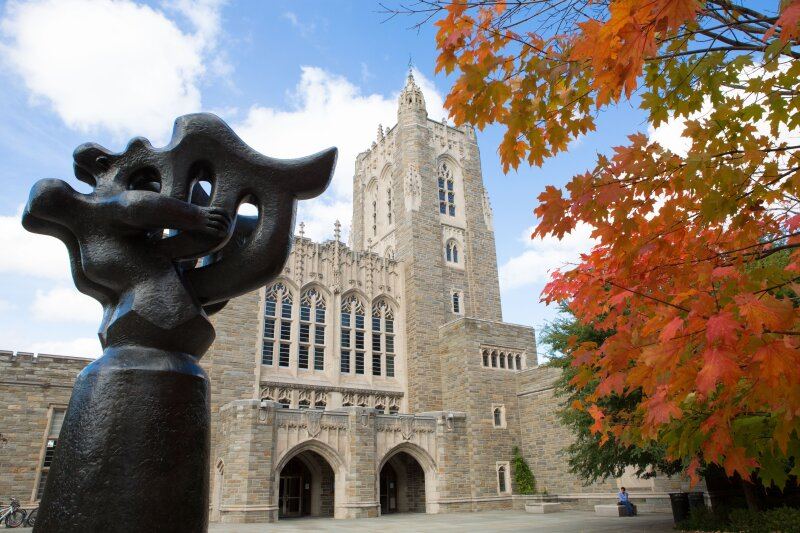
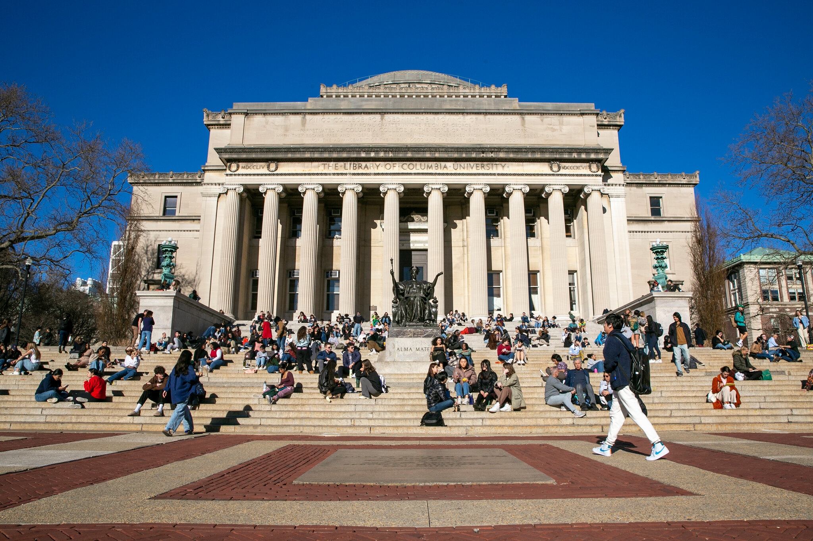

Featured Listings
-
Princeton University

TPrinceton University is a prestigious private research university located in Princeton, New Jersey, United States. Founded in 1746, it is one of the oldest and most respected universities in the United States. Princeton is a member of the Ivy League, a group of eight prestigious universities known for their academic excellence and selectivity.
Click Here for more information
Yale University
Yale University is a prestigious private research university located in New Haven, Connecticut, United States. Established in 1701, it is one of the oldest and most esteemed universities in the country. Yale is a member of the Ivy League, a group of eight prestigious universities renowned for their academic excellence and rich history.
Click Here for more information
Columbia University

Columbia University is a prestigious private research university located in New York City, New York, United States. Founded in 1754, it is one of the oldest and most esteemed universities in the country. Columbia is a member of the Ivy League and is consistently ranked among the top universities worldwide.
Click Here for more information